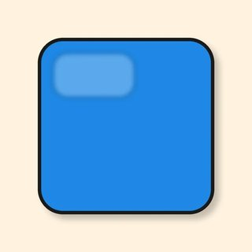
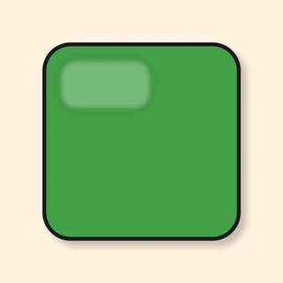
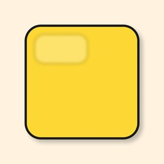
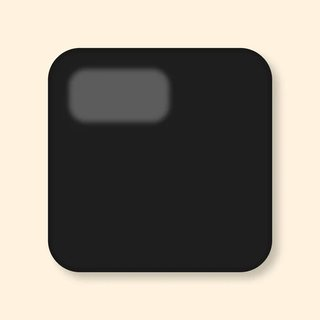
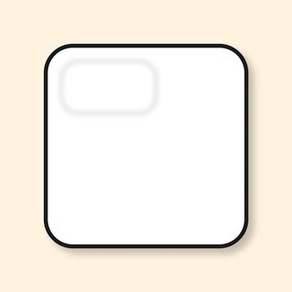
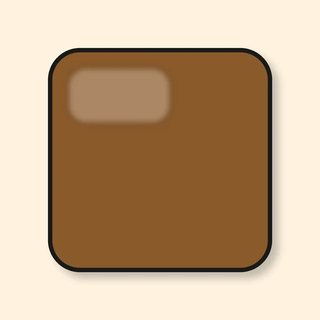
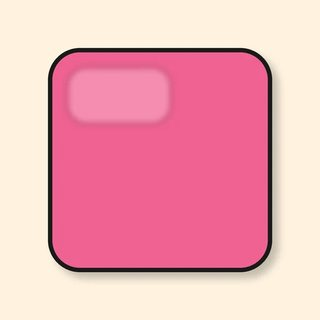
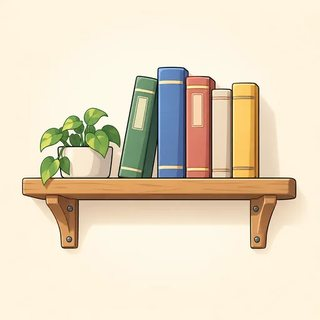
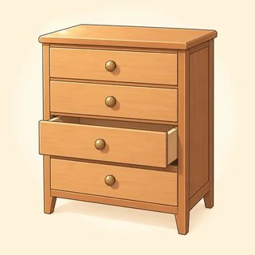

Describing the World Around Me
Colors, "two red bags," "It's under the table," "She's got long hair." In this module you learn to describe things, places, and people.
✏️ Write · 👂 Listen · 🗣️ Say · 👥 Work with a partner · 📖 Read
Mistakes are OK. They help you learn. At home, open the online lesson and press 🔊 to listen.
I want to practice .
I can do it! I will .
Plurals, Colors & Adjectives
Class 14- red

blue
green
yellow
black
white orange
orange
brown
pink- gray (grey)
 big
big small
small- beautiful
 expensive
expensive- cheap · new · old · nice
 foot → feet
foot → feet
| Rule | One | Two or more |
|---|---|---|
| Most words: + s | a car · a book | cars · books |
| After s, x, ch, sh: + es | a bus · a box · a watch | buses · boxes · watches |
| Consonant + y: y → ies | a city · a baby | cities · babies (but: days, keys) |
| Some f / fe: → ves | a knife · a leaf | knives · leaves |
| Special words | man · woman · child · person · foot · tooth | men · women · children · people · feet · teeth |
| Adjective + noun | ✅ Yes | ❌ No |
|---|---|---|
| The color comes before the thing. | a red car | a car red |
| No s on the adjective. | two red cars | two reds cars |
| Two adjectives: opinion → size → color | a nice big red bag | a red big nice bag |
❓ What color is it? — It's blue. / It's black and white.
- one book → two
- one bus → three
- one box → two
- one watch → four
- one city → many
- one day → seven
- one knife → some
- one man → two
- one child → three
- one person → many
 It's
It's  It's
It's  It's
It's  It's
It's  They're
They're  It's
It's  It's
It's  It's
It's
- I have two ( red cars / reds cars ).
- She has a ( car blue / blue car ).
- There are three ( childs / children ) in the park.
- It's a nice ( big red / red big ) bag.
- Many ( persons / people ) are here.
- I like the ( white houses / houses white ).
- ( car / red ) → a
- ( cups / white / two ) →
- ( dog / black / small ) → a
- ( books / blue / three ) →
- ( bag / red / nice / big ) → a
Look at your bag or your room. Write 3 things. Use a number and a color.
Example: two black pens · a small green notebook
Maya: Look at these bags! They're nice.
Leo: Yes! There are red bags, blue bags, and black bags. Which one do you like?
Maya: I like the big red bag. But it's expensive.
Leo: What about this small green one? It's cheap.
Maya: Hmm. I don't like green. What colors are the other ones?
Leo: There are two brown bags and one gray bag over there.
Maya: Oh, the gray one is lovely! A nice small gray bag. Perfect.
Leo: Good choice! It's a beautiful bag.
👥 Read with a partner. Then change the colors and read again.
Take a card. Don't show it! Say 3 clues. Your partner guesses.
- Which is correct? A) I have two reds cars. B) I have two red cars. C) I have two cars red.
- The plural of child is: A) childs B) childes C) children
- Which is correct? A) a red big bag B) a big red bag C) a bag big red
- ☐ make plurals: books, buses, cities, children
- ☐ name 10 colors
- ☐ ask "What color is it?"
- ☐ say "two red cars" (no s on red!)
- ☐ say "a nice big red bag"
Write about things in your home. Use a number, a color, and an adjective. "There are two small white cups in the kitchen."
Where Things Are — Prepositions of Place
Class 15 kitchen
kitchen bedroom
bedroom living room
living room bathroom
bathroom table
table- sofa

shelf
drawer lamp
lamp- remote
 key → keys
key → keys phone
phone door
door window
window- in · on · under
- next to · between
- behind · in front of
- above · below · near · opposite
| Question | Answer | |
|---|---|---|
| One thing | Where is my phone? | It's on the table. |
| Two or more | Where are my keys? | They're in your bag. |
| in front of = 3 words ✅ · "in front" ❌ | at home · at work · at school ✅ · "in home" ❌ |
1. The ball is the box.
2. The ball is the boxes.
3. The ball is the box.
4. The ball is the table.
5. The ball is the box.
6. The ball is the box.
7. The ball is the box.
8. The ball is the box.
- The lamp is on top of the desk. → The lamp is ( on / under ) the desk.
- The keys are inside the bag. → The keys are ( in / on ) the bag.
- The cat is below the bed. → The cat is ( above / under ) the bed.
- A book, the cup, a book. → The cup is ( between / behind ) the two books.
- The bag is at the back of the door. → The bag is ( in front of / behind ) the door.
- The chair is at the side of the desk. → The chair is ( next to / above ) the desk.
- Where my phone? — on the table.
- Where my keys? — in your bag.
- Where the children? — in the garden.
- Where the remote? — between the cushions.
- Where my glasses? — next to the lamp.
A small living room: a sofa in the middle · a lamp at the side of the sofa · a TV facing the sofa · a cat below the table · a clock high on the wall, over the sofa · a phone on top of the table.
- The lamp is the sofa. ( next to / under )
- The TV is the sofa. ( opposite / in )
- The cat is the table. ( under / on )
- The clock is the sofa. ( above / below )
- The phone is the table. ( on / behind )
- I am home.
- She is work.
- The children are school.
- The milk is the fridge.
- My keys are the kitchen.
Where are 3 things in your home (or a dream home)? "My phone is on the table."
Ben: Ana, where are my keys? I can't find them!
Ana: They're on the table, next to your cup.
Ben: Oh, thanks. And my phone? Where is it?
Ana: It's under the newspaper, I think. Yes — there!
Ben: Great. Now, where is my bag?
Ana: Your bag is behind the door. And your glasses are in it.
Ben: Perfect! And the remote? We can watch TV.
Ana: The remote is between the two sofa cushions. It's always there!
Ben: Ha! You know my house better than me. Thank you, Ana.
👥 Read with a partner. Then swap.
You have Room A. Your partner has Room B. Don't show your picture! Talk and find 6 differences.
- A book, a cup, a book. Where is the cup? A) behind the books B) between the two books C) under the books
- Which is correct? A) I am in home. B) I am at home. C) I am on home.
- Where ___ my keys? A) is B) are C) am
- ☐ say in, on, under, next to, between, behind, in front of, above
- ☐ ask "Where is…?" and "Where are…?"
- ☐ answer "It's…" and "They're…"
- ☐ name rooms and furniture
- ☐ say "at home," "at work," "at school"
Look at your table now. Where are things? Use a different word in each sentence (on, next to, under…).
Have Got — People & Belongings
Class 16- hair
- long ↔ short
- curly ↔ straight
- dark · blond · gray
- eyes: blue · brown · green
- glasses
- a beard · a moustache
 tall ↔ short
tall ↔ short bag
bag umbrella
umbrella passport
passport notebook
notebook
| ✅ Yes | ❌ No | ❓ Question | Short answer | |
|---|---|---|---|---|
| I / you / we / they | I have got = I've got a phone. | I haven't got a car. | Have you got a pen? | Yes, I have. / No, I haven't. |
| he / she / it | She has got = She's got long hair. | She hasn't got a car. | Has she got glasses? | Yes, she has. / No, she hasn't. |
💡 have got = have. "I've got a sister" = "I have a sister." In the US people often say: Do you have a pen? — Yes, I do.
💡 She's got = she has got. She's happy = she is happy.
💡 She's got long hair (not hairs). He's tall (= he is tall).
- I a new phone.
- She long curly hair.
- They two children.
- He a beard and glasses.
- We a big garden.
- It four legs.
- I a car.
- She a beard.
- They any children.
- He glasses.
- We much time.
- Have you got a pen?
- Has she got long hair?
- Has he got a beard?
- Have they got children?
- a) Yes, they have.
- b) No, he hasn't.
- c) Yes, I have.
- d) Yes, she has.
1 → 2 → 3 → 4 →
He's got hair.
He's got and .
She's got hair.
She's got green eyes and .
He's got short hair and .
He got glasses.
Choose a person: a family member, a friend, or a new person you invent. Write 4–6 sentences. Use has got and one hasn't got.
Example: This is my sister, Lena. She's tall. She's got long blond hair and green eyes. She's got a small red car. She hasn't got a garage.
Sam: I'm at the station. How can I find your brother?
Nadia: OK. He's tall, and he's got short dark hair.
Sam: Has he got a beard?
Nadia: Yes, he has. And he's got glasses too.
Sam: Has he got a bag?
Nadia: Yes — he's got a big blue backpack.
Sam: I think I can see him! Tall, dark hair, glasses… blue backpack. Is that him?
Nadia: That's him! His name is Omar. Say hello!
Sam: Great. We haven't got much time, so I'll go now. Thanks, Nadia!
👥 Read with a partner. Then swap.
You have a bag card. Don't show it! Ask your partner. Tick ✓ or cross ✗. Find 2 things you have both got.
Then: Who is it? Choose a person on the face card. Your partner asks: Has he got glasses? Has she got long hair?
- Which is correct? A) She have got blue eyes. B) She has got blue eyes. C) She got blue eyes.
- "Has he got a beard?" No answer: A) No, he haven't. B) No, he hasn't. C) No, he hasn't got.
- "He's got a beard." 's means: A) is B) has C) his
- ☐ say "I've got…" and "She's got…"
- ☐ say "I haven't got…" and "He hasn't got…"
- ☐ ask "Have you got…?" and answer "Yes, I have. / No, I haven't."
- ☐ describe hair and eyes: "She's got long dark hair."
- ☐ describe a person in 5 sentences
Write about a person in your family (or a new person). Use has got. Was have got or has got harder?